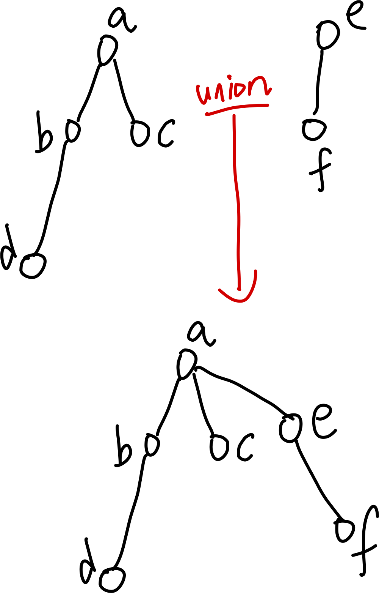

Lec 9 - ordered & sorted containers
Types of Containers
container: 可以 add, remove
searchable container: 可以 find 的 container
sequential container: 可以 iterate over elements 的 container
ordered container: elements 的顺序通过它们被加入的顺序来决定的 sequential container（比如 stack, queue...)，但是可以 arbitrarily insert 元素到任意位置
sorted container: 有 pre-defined order 的 container，不可以 arbitrarily insert 元素，只能 add/remove 到 pre-defined order 的位置上 （比如 PQ
implement sorted/ordered container 的两种 style: connected 或者 contiguous，典型的是 underlying d.s. 是 linked list / array
Complexities of array/list based
For ordered container:
(add 的复杂度是 \(O(1)\), 因为直接加在最后）
| array-based | link-list-based | |
|---|---|---|
| add | 1 | 1 |
| remove(val) | n | n |
| remove(iterator) | n | n (1 for doubly linked) |
| find(val) | n | n |
| op* | 1 | 1 |
| op[] | 1 | n |
| insert | n | n (1 for doubly linked) |
For sorted:
（add 的复杂度是 n, 因为先要找到应该加入的位置）
| array-based | link-list-based | |
|---|---|---|
| add | n | n |
| remove(val) | n | 1 |
| remove(iterator) | n | n (1 for doubly linked) |
| find(val) | \(\log n\) | n |
| op* | 1 | 1 |
| op[] | 1 | n |
从 ordered 到 sorted container，除了 add 变了外唯一的区别是 array_based 的 find(val) 复杂度降了，因为可以在 contiguous 的内存上使用 Binary search.
所以对于 sorted 的 container，使用 array instead of list 作为 underlying d.s. 在 find 上有额外的好处.
Binary Search
\(O(n \log n)\)
Binary Search on array
int bsearch(double a[], double val, int left, int right) {
while (right > left) {
int mid = left + (right - left) / 2;
if (val == a[mid])
return mid;
if (val < a[mid])
right = mid;
else
left = mid + 1
}
return -1; // not found
}
Speed up BS
我们知道 == 是 rarely happen 的.
所以把 == 放到 else 上，先check <，然后 check >
int bsearch(double a[], double val, int left, int right) {
while (right > left) { //comp1
int mid = left + (right - left) / 2;
if (a[mid] < val) //comp2
left = mid + 1
else if (val < a[mid]) //comp3(only halfs the time)
right = mid;
else
return mid;
}
return -1; // not found
}
lower_bound(), upper_bound()
一个更快的 version: 总是只有两次 comp，但是无法检测 value 不在 array 里的情况.
int lower_bound(double a[], double val, int left, int right) {
while (right > left) { //comp1
int mid = left + (right - left) / 2;
if (a[mid] < val) //comp2
left = mid + 1
else
right = mid;
}
return left
}
所以称之为 lower_bound. 会返回 array 里第一个大于等于 target 的 item. （不论 value 在不在 array 里.）
dually 我们还有 upper_bound 函数.
以及 equal_range，检测一段范围里是否所有 items 都有等于 target.
Representing sets
我们可以让一个 container 拥有 set 的性质：需要 union, intersect, difference 和 symmetric difference
以及添加 element, 去除 element, 判断是否是 element 的运算.
std::set_union 依赖于 sortedness. 对于两个 set （或者任意储存同种数据类型的 container），它可以在某段范围上实现 set union 的效果.
template<class ForIterator1, class ForIterator2, class OutIterator, class Compare>
OutIterator set_union(ForIterator1 first1, ForIterator1 last1,
ForIterator2 first2, ForIterator2 last2,
OutIterator result, Compare compare) {
while (first1 != last1 && first2 != last2) {
if (compare(*first1, *first2)) { //compare 返回的是 (x<=y)
*result++ = *first1++; // set1 element less than set2 element
} else if (compare(*first2, *first1)) {
*result++ = *first2++; // set2 element less than set1 element
} else { //else: 两个元素相等, both index++
*result++ = *first1++;
++first2;
}
}
// get remainings elements
while (first1 != last1)
*result++ = *first1++;
while (first2 != last2)
*result++ = *first2++;
return result; // sorted union of set1 and set2
}
Complexity of set operations
Initialize: \(O(1)\) 如果 unsorted；\(O(n\log n)\) if sorted（需要排序）;
clear: \(O(n)\)
isMember: \(O( \log n)\) ，需要binary search
copy: \(O(n)\)，即和空集 union
union, intersect：\(O(n)\)
STL 的 ordered_set 是基于 red-black tree 的，unordered_set 是基于 hash table 的
Representing disjoint set: Union-Find
之前我们表示的是把一个 set 作为一个 container，支持 set 和 set 之间的运算
但是如果我们想要一个 set of disjoint sets：所有元素构成一个大集合，并且这个大集合分成一些小集合的 disjoint unions，我们随时都可以 union 小集合，这种数据结构称为 union-find set
实现方法：我们给每个集合选择一个 "Representative"，用它来表示这个集合
一开始，每个元素各自代表自己的单点集，representative 就是自己
每次我们做 union 两个集合（即两个元素所在的集合），我们就找到这两个元素的 representative，并把其中一个 representative 作为另一个的 representative
于是，当我们查询 representative 的时候，我们通过递归查找 representative 的 representative，一直查到 representative 等于自己的元素：这个元素是这个集合最终的 representative。
naive union-find set
int find(int x) {
int root = x;
// find until root, the charateristic is it represents itself
while (parent[x] != x) {
root = parent[x];
x = parent[x];
}
return x;
}
void unionSets(int x, int y) {
int rootX = find(x);
int rootY = find(y);
parent[rootY] = rootX;
}
// 判断两个节点是否属于同一集合，即 root 是否相同
bool isConnected(int x, int y) {
return find(x) == find(y);
}
path compression && rank: 优化 union-find set
我们发现，如果我们把两个元素所在的集合 union 的时候，嵌套太多层
（ex：a，b，c，d，e 五个元素，我们合并 ab，bc，cd，de，于是 e 的 parent 为 d，d 的 parent 为 c，c 的 parent 为 b，b 的 parent 为 a.）
最终，find root 的行为是 O(n) worst case 的，我们无法避免这种极端的深层嵌套发生。
我们可以优化这个行为：
实际上，可以把每个集合都看作一个树，representative 等于自己的元素就是这个 tree 的 root.
union 的行为，实际上就是合并两棵树：把一棵树作为另一棵的 root 的 subtree

find 的行为实际上向上找 root，操作次数等于这个节点的树高。
所以优化 union-find set 实际上就是优化每个树(集合)的树高
也就是优化在 union 时，树的平衡程度
我们提出两个优化：
- rank optimization：控制 union 行为时，两个树谁作为另一个的子树
我们希望，尽量让新的树平衡，不要出现过高的子树，在合并时用宽度来代替深度，因为 union find set 中宽度没有代价
因而，我们总是希望把高度更高的树作为 root，更低的树作为它的 subtree. 这样，新的树高就被二者中高的一棵树给 bounded 了.
这样的话，当且仅当两棵树高度相同时，新的树高才会是 max(height(left), height(right)) + 1；其他情况新的树高都等于 max(height(left), height(right))
实现方法也很简单：我们用一个 rank 来表示每个 root 的树高.
```c++
class UnionFind {
private:
vector
// 合并操作，按秩优化
void unionSets(int x, int y) {
int rootX = find(x);
int rootY = find(y);
if (rootX != rootY) {
if (rank[rootX] > rank[rootY]) {
parent[rootY] = rootX;
} else if (rank[rootX] < rank[rootY]) {
parent[rootX] = rootY;
} else {
parent[rootY] = rootX;
rank[rootX] += 1; // 如果秩相同，提升 rootX 的秩
}
}
}
}; ```
并且在 union 的行为上，持续 keep track of 每个 root 元素的树高
- path compression: 我们在 find 行为时，递归地把当前元素到它所在集合的 root 元素 的路径上每个元素的 parent 都改变成 root，让它们的所在高度都变成 2.
```c++ // 查找操作，带路径压缩 int find(int x) { if (parent[x] != x) { parent[x] = find(parent[x]); // 递归查找根节点并路径压缩 } return parent[x]; }
```
整体：
class UnionFind {
private:
vector<int> parent; // 存储每个节点的父节点
vector<int> rank; // 用于按秩优化
public:
// 构造函数，初始化 n 个节点
UnionFind(int size) {
parent.resize(size);
rank.resize(size, 0); // 初始秩为 0
for (int i = 0; i < size; ++i) {
parent[i] = i; // 每个节点的初始父节点是自己
}
}
// 查找操作，带路径压缩
int find(int x) {
if (parent[x] != x) {
parent[x] = find(parent[x]); // 递归查找根节点并路径压缩
}
return parent[x];
}
// 合并操作，按秩优化
void unionSets(int x, int y) {
int rootX = find(x);
int rootY = find(y);
if (rootX != rootY) {
if (rank[rootX] > rank[rootY]) {
parent[rootY] = rootX;
} else if (rank[rootX] < rank[rootY]) {
parent[rootX] = rootY;
} else {
parent[rootY] = rootX;
rank[rootX] += 1; // 如果秩相同，提升 rootX 的秩
}
}
}
// 判断两个节点是否属于同一集合
bool isConnected(int x, int y) {
return find(x) == find(y);
}
};
复杂度分析
不带优化：union 和 find 都是 O(n)
带 path compression 和 rank 优化：union 和 find 平均 \(O(\alpha(n))\)，这是一个 inverse-Ackerman 函数，增长非常缓慢，可以看作 constant
这两个优化是非常大的提升。
Lec 10 Elementary Sorting
Elementary sorts:
- bubble sort
- selection sort
- insertion sort
- counting sort (限于 int)
High performance sorts:
- quicksort
- mergesort
- heapsort
- radix sort (限于 int, char*, ...)
Array 和 Linked lists container 都可以被 sort. 并且同一个 method 对 array/linked list 的 sorting performance 会不一样.
STL sorting based on iterators。我们这里只用 array 和 indices 来举例。
Size 如何影响 sorting 策略
当数据规模较小，可以 fit into memory 时：
- Internal Sort（内部排序）
如果可以“看到所有elements“，即：存在 O(1) random access to any element 的时候，可以采取 internal sort.
- 典型的内部排序算法包括：
- 快速排序（Quick Sort）
- 堆排序（Heap Sort）
- 归并排序（Merge Sort）
-
冒泡排序（Bubble Sort）
-
Indirect Sort（间接排序）
如果可以“看到所有 items 的 indices”， 也可以采取 indirect sort.
通过对数据的索引（或者指针）进行排序，而不直接修改原数据的顺序。
- 通常用于需要保持原始数据不变的场景，以及 copying 代价昂贵的场景（比如图和树，深嵌套型 containers，需要 deep copy 的 containters 等
当数据规模大到无法 fit into memory 时：
External Sort（外部排序）
- 数据被分块存储在外部存储介质（如磁盘）中，部分数据被加载到内存中进行排序。
- 通常使用归并排序或多路归并（K-Way Merge）算法来将多个排序好的小数据块合并成一个有序的数据集。
- 用于处理海量数据，特别是在数据库、分布式系统或数据仓库中处理超大规模数据时。
Exercise: swap
template <typename TYPE>
void swap(TYPE &a, TYPE &b) {
TYPE temp = a;
a = b;
b = temp;
}
Stability
除了 time complexty 的 best/worst case 以及 memory 的考量，我们还需要考虑 stability
Stability 指的是：preservation of relative order of items with duplicate keys. 即对于 key 相同的元素，sorting 是否会改变其原本的排序方式
elementary sorts 通常 stable，complex sorts 则不然
当存在多个 key 时，stability 尤其重要（因为是一个一个 key 排序的，如果在一个 key 上，两个相同 key 的元素的位置失去了原本的结构，可能在这一环里没区别，但是到下一个 Key 的排序就完全不对了。
Adaptivity 自适应性
Adaptive（自适应） 和 Nonadaptive（非自适应）表示算法对数据初始顺序的利用程度
Adaptive Sort（自适应排序）
- 自适应排序算法能够根据输入数据的初始顺序调整其行为。如果输入数据已经部分有序或接近有序，自适应排序算法可以更高效地完成排序，减少比较和交换的次数。
- 特点：
- 处理接近有序数据较快：对于部分已经排序的输入，算法的表现更优。
- 动态调整：在运行时，算法能够动态调整其行为以适应数据的有序程度。
- 适用场景：
- 输入数据已经部分有序。
- 希望充分利用已有的数据顺序。
Nonadaptive Sort（非自适应排序）
不管输入数据的初始顺序如何，总是按照固定的方式进行操作，执行相同的操作步骤
- 特点：
- 固定的时间复杂度：时间复杂度与数据的初始顺序无关。
-
通常更加通用：这种算法适用于任何类型的输入，不依赖数据的初始状态。
-
示例：
- 堆排序（Heap Sort）：堆排序不管输入数据是否部分有序，总是先构建一个堆，然后进行堆排序操作，时间复杂度为 \(O(n \log n)\)。
- 快速排序（Quick Sort）：经典的快速排序不利用输入数据的初始顺序，即使输入数据已经有序，它的时间复杂度仍然保持 \(O(n \log n)\)（最佳情况下），最坏情况下为 \(O(n^2)\)。
-
归并排序（Merge Sort）：归并排序也是非自适应的，始终按照分治法进行操作，不管输入数据是否已经部分有序。
-
适用场景：
- 输入数据无序，或不关心输入的有序性。
- 希望算法有稳定的时间复杂度表现。
Bubble Sort
bubble sort 的做法是：对于把每个元素 a[i] 都替换成 a[i:end] 中最小的元素
具体是从 end 往左遍历所有 a[i::] 的元素，右边比左边小就交换，这样 greedily 可以得到最后 left 的元素一定是范围内最小的。
void bubble(Item a[], size_t left, size_t right) {
for (size_t i = left; i < right - 1; i++) { // last element 不用排序
for (size_t j = right-1; j > i; j--) {
if (a[j] < a[j-1]) {
std::swap(a[j], a[j-1]);
}
}
}
}
adaptive Bubble Sort
Bubble sort 的 adaptive 版本很弱。就是追踪这个 array 是否已经 sorted 了，如果哪个元素之后 array 已经 sorted，那么就 break
对局部的 sorted 部分并不能利用
void adaptive_bubble_sort(Item a[], size_t left, size_t right) {
for (size_t i = left; i < right - 1; i++) {
bool swapped = false;
for (size_t j = right - 1; j > i; j--) {
if (a[j] < a[j-1]) {
std::swap(a[j], a[j-1]);
swapped = true;
}
}
if (!swapped) {
break;
}
}
}
改进了 best case behavior, 只需要 ~n 次 comparisons（第一次之后就 sorted）
Analysis
bubble sort 的优点：
- stable
缺点：
- O(n^2) time.
Selection Sort
其实和 bubble sort 一样，只是选出 min element 的方式不一样
void selection_sort(Item a[], size_t left, size_t right) {
for (size_t i = left; i < right - 1; i++) {
size_t min_index = i;
for (size_t j = i + 1; j < right; j++) {
if (a[j] < a[min_index]) {
min_index = j;
}
}
std::swap(a[i], a[min_index]);
}
}
adaptive Selection Sort
比 bubble sort 的 adaptive version 更飞舞。就改了一个只在 min_index 不是自己时 swap.
差别是本来在任何 case 都是 n-1 swaps；现在 worst case n-1 swaps, best case 0 swap
但是 comparisons 的数量多了（多出了 n-1 个 if
本来是 \(\frac{n^2 -n}{2}\) comps，现在是 \(\frac{n^2 -n}{2} + n-1\) comps
void adaptive_selection_sort(Item a[], size_t left, size_t right) {
for (size_t i = left; i < right - 1; i++) {
size_t min_index = i;
for (size_t j = i + 1; j < right; j++) {
if (a[j] < a[min_index]) {
min_index = j;
}
}
if (min_index != i) {
std::swap(a[i], a[min_index]);
}
}
}
Analysis
selection sort 优点：
- copy items 的 cost 消耗小（每轮至多一次 swap
缺点：
-
O(n^2) time
-
non stable
比如：
[5a, 3, 4, 5b, 2]
排序后：
[2, 3, 4, 5b, 5a]
相对顺序被破坏了
- adaptive version 没什么用。对于 sorted 和 randomly arranged array 表现相同。
Insertion Sort
insertion sort 的做法：
把所有items 分成 sorted 和 unsorted 两组
每次从 unsorted 移动一个元素进入 sorted.
repeat 直到 unsorted 空
void insertion_sort(Item a[], size_t left, size_t right) {
for (size_t i = left + 1; i < right; i++) {
// a[left:i] is sorted
for (size_t j = i; i > left; --j) {
// we expand the sorted region to a[left:i+1],
// by ctnsly move a[i+1] to the right position on the left
if (a[j] < a[j-1]) {
std::swap(a[j], a[j-1]);
}
}
}
}
imprved adaptive Insertion Sort
我们把连续的 swap 替换为 move, for 替换为 while，break 移除
void improved_insertion_sort(Item a[], size_t left, size_t right) {
for (size_t i = right - 1; i > left; --i) { // first find the min item, move to left
if (a[i] < a[i-1]) {
std::swap(a[i], a[i-1]);
}
}
for (size_t i = left + 2; i < right; i++) {
// a[left:i-1] is sorted
Item v = a[i];
size_t j = i;
// while v in the wrong position j, we let a[j]=a[j-1],
// ready to move v to a[j-1] (when j-1 is the right pos)
while (v < a[j-1]) {
a[j] = a[j-1];
j--;
}
a[j] = v;
}
}
Analysis
adaptive insertion sort 是优于普通的 insertion sort 的.
并且 insertion sort 的好处就是：既是 adaptive 又是 stable 的.
adaptive insertion sort 是当需要 sort 的数目较小时，最优的 sort 方法（比 bubble, selection 好
但是仍然 O(n^2)
Elementary Sorting 对比分析
定义：一个 inversion 就是 a pair of keys that are out of order (就像 determinant 里的 inversion)
Property 1: 当 data 有一个 const upper limit to the number of inversions for each element (即：partially sorted，没有一个元素存在O(n) 个相关的 inversion) 的时候，insertion/bubble sort 的 comparisons 和 swaps 数量几乎是 linear 的.
Property 2: 当 {a \(\in\) data : a 相关的 inversions 数量 constant} 这个集合大小是 const 时，insertion sort 的 comparisons 和 swaps 数量几乎是 linear 的.
Property 3: 当 key 很小时，即便 item 大，selection sort 几乎是 linear 的（comparison 主导，swap cheap，comparison 消耗小的时候很好）
| sort | time | memory | stable |
|---|---|---|---|
| bubble | n^2 | 1 | yes |
| selection | (n^2-n)/2 | 1 | no |
| insertion | n^2 | 1 | yes |
| count | n | n+k | yes |
| merge | n log n | n | yes(stable merge) |
| heap | n log n | 1 | no |
| quick | n log n, n^2 | log n | no |
bubble, insertion: efficient when data are closed to final pos
insertion: also efficient when add new item to sorted data
selection: sorted when key is small, especially when items large
std::sort take 两个 iterator 和一个 operator<
Lec 11: Quicksort
Elementary sort 的两个问题：
- compare every pair of elements
- move element one place at a time.
因而总是 O(n^2) 的
而 quicksort 运用了 divide and conquer 的方法。
Quicksort 的想法：
- 用一个元素
eltpartition the array - divide: 把整个 array 切成大于等于
elt的元素和小于elt的元素，放在左右两边 - Conquer: recursively do this to LHS 和 RHS 的 subarray
partition
我们首先进行最简单的 rightmost partition. 就是拿最后一个元素作为 Pivot
size_t partition_right(int a[], size_t left, size_t right) {
size_t pivot = --right; // rightmost element as partition
while (true) {
// find the first element that is greater than or equal to pivot
while (a[left] < a[pivot]) {
++left;
}
// find the first element that is less than or equal to pivot
while (left < right && a[right-1] >= a[pivot]) {
--right;
}
// check: if left >= right, then we are done
if (left >= right) {
break;
}
// swap the first element that is greater than or equal to pivot
swap(a[left], a[right-1]);
}
// after doing this, we will get all a[::left-1] elements less than pivot,
// and all a[::right-1] elements greater than pivot.
// finally, swap pivot with left
swap(a[left], a[pivot]);
return left;
}
middle-partition
size_t partition_middle(int a[], size_t left, size_t right) {
size_t pivot = left + (right - left) / 2; // middle point as partition
swap(a[pivot], a[--right]); // move the content of pivot to the end
// then everything is the same as partition_right
pivot = right;
while(true) {
while (a[left] < a[pivot]) {
left++;
}
while (left < right && a[right] >= a[pivot]) {
right--;
}
if (left >= right) {
break;
}
swap(a[left], a[right - 1]);
}
swap(a[left], a[pivot]);
return left;
}
quicksort recursion
void quicksort(int a[], size_t left, size_t right) {
if (left+1 >= right) {
return;
}
size_t pivot_index = partition_middle(a, left, right);
quicksort(a, left, pivot_index); //not tail
quicksort(a, pivot_index + 1, right); //tail recursion
}
Analysis
time
Worst case：每次 pivot 都是极端值，把 array 分成 长度为 k-1, 1 和 0 的三部分
那么 $$ T(n) = n + T(n-1) + T(0) $$ 我们得到 T(n) = O(n^2)
Best case: $$ T(n) = n + T(n/2) + T(n/2) $$ 我们得到 T(n) = O(nlogn)
Average case 也是 T(n) = O(nlogn)
memory
第一个 recursive call 不是 tail 的
第二个 recursive call 是 tail 的
所以只需要考虑第一个 recursive call 的 cost
best case: 每次都恰好差不多二分，then O(logn)
worst case: 每次都是极端分割(pivot 左右 0 和 k-1)，then O(n)
有一个缺点：quicksort 是 not stable 的 (可以使其 stable，但是花费一定 time, memory)
a little improvement: 先 sort smaller part
由于第一个 call 是 non-tail 的，第二个 call 是 tail 的，我们总是希望第一个 call sort 的部分更大。
所以加一个小判断
void quicksort2(int a[], size_t left, size_t right) {
if (left+1 >= right) {
return;
}
size_t pivot_index = partition_middle(a, left, right);
// sort the smaller partition first
if (pivot_index - left < right - pivot_index) {
quicksort2(a, left, pivot_index);
quicksort2(a, pivot_index + 1, right);
} else {
quicksort2(a, pivot_index + 1, right);
quicksort2(a, left, pivot_index);
}
}
a little improvement on Partition: median sampling
我们可以这样取 pivot：每次都取 left, right 和 middle element 这三个数中的 median(中间的数)作为 pivot，可以避免极端情况
混合其他 sort 来提高 heapsort 效率
我们可以 reduce the cost of sorting small regions: 当检测到 size 小于某个 constant 时，转为使用 insertion sort，因为对于更小的 arraies，insetion sort 的 cost 更低
当 quicksort 的 recursionDepth 很大的时候，我们可以使用 heapsort
我们可以把这三个 sort 融合起来
void quicksortWithHeapsortFallback(int a[], int left, int right, int depth) {
if (right - left <= CUTOFF) {
insertionSort(a, left, right); // 小数组使用插入排序
return;
}
if (depth > MAX_DEPTH) {
heapsort(a, left, right); // 超过最大深度，使用堆排序
return;
}
size_t pivot_index = partition_middle(a, left, right);
quicksortWithHeapsortFallback(a, left, pivot_index, depth + 1);
quicksortWithHeapsortFallback(a, pivot_index + 1, right, depth + 1);
}
Lec 12: Mergesort
quicksort: 分割后 sort 两边
mergesort: sort 两边之后 merge
quicksort(array)
partition;
quicksort(left)
quicksort(right)
mergesort(array)
merge_sort(left);
merge_sort(right);
merge(left, right);
Ternary Operator
c[k] = (a[i] <= b[j]) ? a[i++] : b[j++];
等价于
if (a[i] <= b[j]) {
c[k] = a[i];
++i;
}
else {
c[k] = b[j];
++j;
}
Merge
void mergeAB(Item c[], Item a[], size_t size_a, Item b[], size_t size_b) {
size_t i = 0, j = 0;
for (size_t k = 0; k < size_a + size_b; k++) {
if (i == size_a) {
c[k] = b[j++];
} else if (j == size_b) {
c[k] = a[i++];
} else {
c[k] = (a[i] < b[j]) ? a[i++] : b[j++];
}
}
}
time: \(\Theta(\text{sizea + sizeb})\)
Modified: merge into itself
把参数里的三个 array 去掉了。这个写法更适合递归
void merge(Item a[], size_t left, size_t middle, size_t right) {
size_t n = right - left;
vector<Item> c(n);
for (size_t i = left, j = middle, k = 0; k < n; ++k) {
if (i == middle) {
c[k] = a[j++];
} else if (j == right) {
c[k] = a[i++];
} else {
c[k] = (a[i] < a[j]) ? a[i++] : a[j++];
}
}
}
Top-down merge sort
void topDown_Mergesort(Item a[], size_t left, size_t right) {
if (right < left + 2) return;
size_t middle = left + (right - left) / 2;
topDown_Mergesort(a, left, middle);
topDown_Mergesort(a, middle, right);
merge(a, left, middle, right);
}
Analysis
优点：
- O(nlogn)
- 当 merge 函数 stable 时，mergesort 是 stable 的（std的
stable_sort<>() - 并不要求 data 可以 random access
Lec 13 strings and seqs
null-terminated C string:
- 使用一个 ptr 和一个 null char 作为首尾
- .size 是 O(n) 的
- 使用 ASCII 作为 alphabet
- 使用 pointer arithmetic 和 stdlibc functions 进行 operations
Object oriented C++ string:
- 使用两个 ptr begin(), end() 作为首尾
- .size 是 O(1) 的
- alphabet configurable
- 使用 class functions, STL 和 stdlibc++ functions 进行 Operations
std::equal
用来比较两个 sequences.
比较 range [first1, last1)
和 [first2, first2 + (last1 - first1))
内是否相同。（即范围就是 first2 - first1）
template<class InputIt1, class InputIt2>
bool equal(InputIt1 first1, InputIt1 last1, InputIt2 first2) {
for (; first1 != last1; ++first1, ++first2) {
if (*first1 != *first2) {
return false;
}
}
return true;
}
Algorithm Problem: equal() with customizable operator==()
template<class InputIt1, class InputIt2, class BinaryPredicate>
bool equal_custom_operator(InputIt1 first1, InputIt1 last1,
InputIt2 first2, BinaryPredicate pred) {
for (; first1 != last1; ++first1, ++first2) {
if (!pred(*first1, *first2)) {
return false;
}
}
return true;
}
example using equal(): palindreme
bool is_palindrome(const string& s) {
return std::equal(s.begin(), s.begin() + s.size() / 2, s.rbegin());
}
(rbegin 是反向的 iterator, 起始值等于 end, ++ 效果往前)
Lexicographic Comparison
lexicographic comparison 比较哦啊的是两个范围内的元素的字典序
我们只需要 < 和 == 就可以 Implement 所有 6 个比较 Operators，并且都只需要另一个 operator 加上 ! 就可以 implement
比较 string:
int compareHelper(const string& s1, const string& s2) {
const size_t len1 = s1.length();
const size_t len2 = s2.length();
for(size_t i = 0; i!=std::min(len1, len2); ++i) {
// compare the first different character
if(s1[i] < s2[i]) {
return -1;
} else if(s1[i] > s2[i]) {
return 1;
}
}
// if all characters are the same, the shorter string is less
if(len1 < len2) {
return -1;
} else if(len1 > len2) {
return 1;
}
// all the way to here, the strings are equal
return 0;
}
比较任意 iteratable container 里的 sequence:
template<class InputIt1, class InputIt2>
bool lexicographical_compare(InputIt1 first1, InputIt1 last1,
InputIt2 first2, InputIt2 last2) {
while ((first1 != last1) && (first2 != last2)) {
if (*first1 < *first2) {
return true;
}
if (*first2 < *first1) {
return false;
}
++first1;
++first2;
}
return (first1 == last1) && (first2 != last2);
}
Algorithm Problem: remove duplicate
如何移除一个 container of strings 里的重复元素
- std::sort，使得重复元素都相邻
- 使用 == 来比较 neighbours，循环
- 检查到 duplicate 则移除第一个
Lab 5 (Sorting)
Algorithm Problem: sort 一个 0,1,2 组成的 vector, O(n) time, O(1) space
我用两个 index i = 0,j = n 来追踪首末的位置，每次监测到0就和 v[i] 交换上并且 i++，检测到 2 就和 v[j] 交换并且 j++. 这样最后所有 0 都在前面，所有2都在后面，中间一定都是1
Note: 用来存 lowindex 的变量和用来 iterate 的变量必须区分开，否则有 bug. 所以是三个变量
void sort012(vector<int>& nums) {
int low = 0, scan = 0;
int high = nums.size() - 1;
while (scan <= high) {
if (nums[scan] == 0) {
std::swap(nums[low], nums[scan]);
low++;
scan++;
} else if (nums[scan] == 2) {
std::swap(nums[high], nums[scan]);
high--;
} else {
scan++;
}
}
}
Lab 6 (Maps and sets)
Algorithm Problem: two pair sum
Find pair (a,b), (c,d) s.t. a+b= c+d
assumption: 对于每个 (a,b) 至多只有一个 pair 和它 sum 一样。
assumption 使得我们可以使用动态更新 hash table 来解决。我们 i,j 遍历，以 sum 为 key，以 pair 为 value，匹配到相同的就动态更新 value.
（如果没有 assumption 就不能这么解，因为如果 (1,6) 匹配到了 (2,5)，可能还有 (3,4) 但是我们已经把 7 的 value 更新成 (2,5) 了，会错过 (1,6) 和 (3,4) 的 pair
void two_pair_sums(const vector<int>& nums, ostream& os) {
unordered_map<int, pair<int, int>> sum_pairs;
int n = nums.size();
for (int i = 0; i < n; ++i) {
for (int j = i + 1; j < n; ++j) {
int sum = nums[i] + nums[j];
// Check if we already have a pair with this sum
if (sum_pairs.find(sum) != sum_pairs.end()) {
pair<int, int> prev_pair = sum_pairs[sum];
// Ensure all elements are distinct
if (prev_pair.first != i && prev_pair.second != i && prev_pair.first != j && prev_pair.second != j) {
os << "(" << nums[prev_pair.first] << ", " << nums[prev_pair.second] << ") and ("
<< nums[i] << ", " << nums[j] << ")\n";
}
} else {
// Store the current pair
sum_pairs[sum] = {i, j};
}
}
}
}
Algorithm Problem: find first non-repeated integer
ex: [-234, 1, 2, 10, 1, 2, -234]: 得到 10
solution: 把每个元素设置为 key, 出现次数设置为 value.
最后遍历 vector，每次把元素作为 key 来在 hash table 里查找，取第一个 value ==1 的 key.
Lec 15: hashing
dictionary ADT
dictionary: 一个 item 是一个 key-value pair
support 两个 basic op:
- insert
- search(retrieve) an item with a given key
desirable ops (除了 Insert 和 search外)
-
remove item
-
sort
-
select the kth largest item
-
join two dicts
主要的用处：
- check if sth in the set
- look up values by keys
Ideas to build a dict
我们使用 std::pair
-
sorted vector: insert O(n)
-
unsorted vectors: search O(n)
-
linked list: Search O(n)
-
BST (比如 std::map 使用 red-black tree)：
search 平均 O(logn), worst O(n)
insert 平均 O(logn), worst O(n)
- hash table (比如 std::unordered_map<>使用 hash table)
search 平均 O(1), worst O(n)
insert 平均 O(1), worst O(n)
fastest: hash table.
因而通常我们使用 hash table 来 represent dictionary.
Hash table 的 Idea: 我们并不对 key 进行排序或者查找，而是想办法把 key 以某个函数转化成一个 Int，于是可以使用 arithmetic operations to calculate a table index from a given key
如果这是可行的，那么我们的 insert 与 search 都可以近似 random access 的方式来进行. 于是除了 grow 的时候之外理论上 const time.（为了达到 const time，我们希望函数是 bijective 的；我们很难做到，不过没关系，近似于 injective 也可以，我们可以解决冲突）

我们需要做这些事情：
- translation: 把一个 key 翻译为一个 int
- compression: limit an int to a valid index
- collision resolution: 解决 hash to same table index 的 search keys 的冲突
前两步合称一个 hash function
hash function
我们之所以需要 compression 是因为 translation 的范围由 translate function 决定，是固定的而不会随着 table size 变化而变化. 我们需要通过 compression 把这个 hashint 转化成一个 valid table index，from 0 to M $$ h:key \mapsto t(key) \mapsto c(t(key)) $$
Note: std::hash<> 只 Provide translation，没有 compression. 如果我们不使用 std::unordered_map 而是使用 std::hash 那么我们要自己写 compression.
example:
这个简单的 translate function 把 key 的首字符映射到它的 ascii - 'a'
int translate(const char *c) {
return (*c - 'a');
}
translate floatng pts
key in [0,1) $$ h(key) = \lfloor key * M \rfloor $$ key in [s,t) $$ h(key) = \lfloor \frac{key-s}{t-s} * M \rfloor $$
example: range = [1.38, 6.75), M=13 $$ h(3.65) = \lfloor \frac{3.65-1.38}{6.75-1.38} * 13 \rfloor = 5 $$
translate int
我们使用 modular 来 translate Int $$ t(key) = key\ c(x) = x \mod M\ h(key) = key \mod M $$ 如果 data randomly distributed，那么这是个很不错的 hash function.
但是如果它们有很多都是 M 的 multiples，那么就不好。
比如我们选取 M = 5.
结果我们的数据是 10, 15, 20, 25
那么 collusions 太多了.
translate string
idea: sum up ascii of chars
但是 Bad: "stop", "post", "tops" 的 hash address 都一样.
太多 collusions.
Idea: order matters. 所以我们可以 take

基于长度。每次读到新的位，前面的位的 hash value 就乘以 10.
这样确保了：1. 长度短的比长度长的要尽量 hash int 更大；2. 越前面的字符权重越大